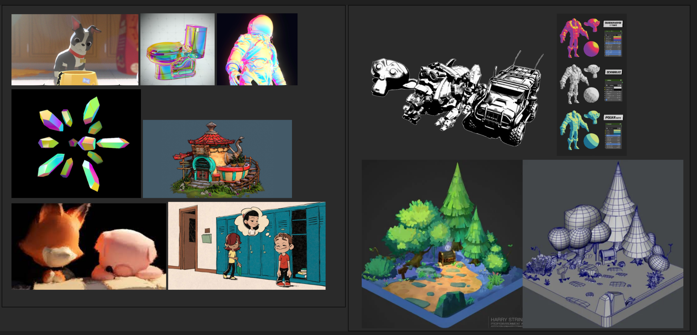

|

|
For our project, we are going to implement a Cel-Shader, also known as a toon shader. Toon shading is a type of stylistic rendering that will allow us to render images that have the feel of 2-dimensional shading and color applied to 3-dimensional models. We will then build upon the toon shader to explore different styles, such as shading that looks like hand-drawn line art.
After completing Project 4 and gaining a basic understanding of basic shaders, like Blinn and Phong, we wanted to go deeper and explore different kinds of shaders that deviated from the traditional realistic shader we’ve seen thus far. We wish to create a cel-shader (commonly known as toon shader) that will emulate the look and feel of hand drawn/comic-book style art. It is difficult to implement this kind of shader because hand-drawn art is difficult to replicate computationally, since human drawings are less precise and follow a more organic approach compared to computer-generated art. It is also difficult to emulate because there is really no objective “equation” or mode of measurement for creating traditional art. In order to address these points and create a shader that will produce a more 2-dimensional feel, we will try to use edge-detection. With an edge detection algorithm, such as Sobel edge detection, object edges are given a black outline to emulate a hand-drawn style. Additionally, we will implement full diffuse reflection and discrete colorization, which will render scenes in using flat colors that do not follow gradient color patterns to emulate a hand-colored look. This color block style will more closely resemble comic book/manga/anime shading styles.
Throughout this project, our goal is to create a cell shader that will be able to render any 3D model as if it was a 2D hand drawn object. We additionally want to build off of this shader by also applying a line art texture that mimics the look of comic book art. By the end of the project, we will produce renders of three different models with our shader applied to it. Since we are looking to achieve a more hand drawn, organic texture, we will provide parameters that the user can adjust to customize the sharpness, thickness, or texture of the line art.
To measure the quality of our project, we can compare models rendered with physically-based materials with renders of our toon shaded models. A long-term goal would be to create an animation from multiple of these images and compare the resulting animation to hand-drawn flip book animations. However, we are not aiming for pixel-perfect accuracy; the goal of the project is to produce renders that give the feel of hand-drawn objects, even if there are artistic artifacts in the render. We might also explore iridescent coloring in the images if we have extra time.
Some elements we foresee that we will run into challenges with are the edge detection and how to identify areas of variation in the line weights and texture of the brushes according to the lighting. To tackle this part of the implementation, we have started to look through content on edge detection.
Week 1 (4/11):
Mon 4/11 Proposal due
Wed 4/13 Proposal Revisions sent, start the project
Part 1:
- Task 1: Develop an initial version of the cel shader
- Task 2: Set the light direction
Week 2 (4/18):
Part 2: Create outlines
Part 3: Modify the cel shader to imitate hand-drawn styles
- Task 1: Build upon the outlines and change the parameters (weight/texture of the strokes)
- Task 2: Integrate the lines to vary based on different lighting qualities
Week 3 (4/25):
Part 4: Implement support for users to customize the sharpness, thickness, or texture of the line art
Complete the milestone status report webpage
Tues 4/26 Graded Milestone due
Week 4 (5/1):
Part 5: If time permits, explore different 2D style textures (i.e. iridescent, watercolor, etc)
Thurs 5/5 Final Presentations
Week 5 (5/8):
Finalize the renders and videos demonstrating the project
Complete the final project video and report webpage
Tues 5/10 Final Deliverables due
Photo inspiration links:
Iridescent crystals
Astronaut 2D iridescent shader
Toilet
Short film with hand-drawn textures
Resources we will use as cel-shading references:
Important concepts behind toon shading
Cel shading implementation tutorial
Computing line thickness
Outline Implementation I
Outline Implementation II (From a previous semester of CS184)
Information on pipelines for procedural texturing for hand-painted styles